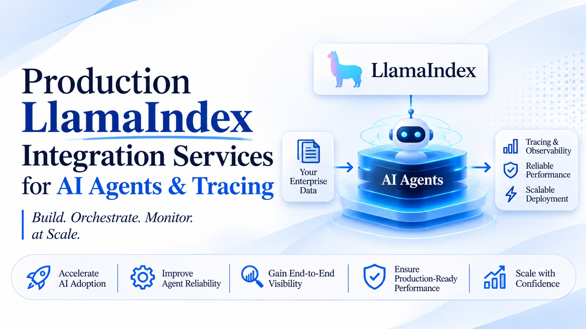

Production LlamaIndex Integration Services for AI Agents & Tracing

Building a LlamaIndex agent that answers well in a notebook takes an afternoon. Keeping it correct, fast, affordable, and explainable for thousands of users takes engineering. The gap between the two is mostly about visibility: when an agent picks a tool, retrieves a passage, and writes an answer, can you see exactly why?
01The Notebook to Production Gap
In a prototype, a wrong answer is a curiosity. In production it is a support ticket, a bad decision, or a compliance question. Agents make this harder because they act in several steps: they plan, call tools, read results, and decide again. A failure can hide in any step.
That is why teams look for production LlamaIndex integration services that treat ingestion, retrieval, agent logic, and tracing as one engineered system rather than a collection of scripts.
02What a Production Stack Covers
| Layer | Its job | Production concern |
|---|---|---|
| Ingestion | Load, parse, chunk, and embed documents | Repeatable runs, updates, deletes, and parsing quality |
| Indexing | Store vectors and metadata for search | Tenant isolation, filters, and re-embedding plans |
| Retrieval | Find the right passages for a question | Recall, reranking, and permission-aware filters |
| Query engines | Combine retrieval with a model to answer | Citations, thresholds, and safe refusals |
| Agents and tools | Plan steps and call tools to complete tasks | Scope, step limits, approvals, and timeouts |
| Tracing | Record every step of every run | Cost, latency, privacy, and debugging speed |
from llama_index.core import SimpleDirectoryReader, VectorStoreIndex
docs = SimpleDirectoryReader("policies/").load_data()
index = VectorStoreIndex.from_documents(docs)
query_engine = index.as_query_engine(similarity_top_k=5)
answer = query_engine.query("What is the contractor retention period?")
# In production: attach tracing, filters, and citation checks here.LlamaIndex APIs evolve quickly. Check the current LlamaIndex documentation before you build.
03Designing Agents Safely
- Give each agent a narrow job. A focused agent with few tools is easier to test and trace than a general one.
- Describe tools precisely. Clear names, inputs, and limits help the model choose correctly.
- Cap the steps. Set a maximum number of steps and a time limit so a confused agent cannot loop forever.
- Separate read from write. Reading is low risk. Actions that change data need validation and approval.
- Pass identity through. Tools should run with the requesting user's permissions, not a shared super-account.
- Plan for failure. Handle tool errors, empty retrievals, and timeouts with clear fallbacks.
04Anatomy of a Trace
A trace shows one request as a tree of steps, each with its own time, inputs, and outputs. The sketch below is illustrative, with bar lengths showing relative time rather than measured values.
With a trace like this, a slow or wrong answer stops being a mystery. You can see which step took the time, which documents were retrieved, which tool was called with what input, and what the model produced from them.
05What to Capture and Redact
| Capture | Why |
|---|---|
| Step names, order, and timing | Finds the slowest step and loops |
| Retrieved document ids and scores | Explains why an answer used a source |
| Prompts and model versions | Lets you reproduce and compare behavior |
| Tool calls, inputs, and outputs | Shows what actions the agent took |
| Token counts and cost | Connects behavior to spend |
| User tier, tenant, and feature tags | Lets you slice problems by segment |
Traces can contain personal or confidential data. Redact sensitive fields before they leave your application, restrict who can view traces, and set a retention period.
06Evaluating and Monitoring
- Build a golden dataset from real questions, with expected sources or answers.
- Score retrieval and answers separately. Check whether the right passage was found, then whether the answer used it faithfully.
- Gate releases. Compare each candidate with the baseline on quality, latency, and cost.
- Sample live traffic. Score a share of real traces and review the worst ones.
- Feed failures back. Add every reviewed failure to the dataset.
07Production Checklist
- Ingestion is repeatable and handles updates and deletes
- Retrieval respects tenant and permission filters
- Answers cite sources and can decline when evidence is missing
- Agents have narrow scope, step limits, and timeouts
- Consequential actions need validation or approval
- Every run is traced, with sensitive data redacted
- A golden dataset gates each release
- Alerts watch latency, cost, errors, and quality drift
08FAQs
What is LlamaIndex used for?
It is a framework for connecting language models to your data and tools, including ingestion, indexing, retrieval, query engines, and agents.
Why do agents need tracing?
Agents act in several steps, so a failure can hide in any of them. Tracing records each step, making slow, costly, or wrong runs inspectable.
Can we trace without exposing sensitive data?
Yes. Redact sensitive fields before export, restrict trace access, and set retention limits. Review your tracing vendor's data handling terms.
How do we stop agents from looping or overreaching?
Limit steps and time, keep tool sets small, run tools with the user's permissions, and require approval for consequential actions.
How do we know a change is safe to release?
Run a golden dataset against the candidate and compare quality, latency, and cost with the current baseline before shipping.
09Conclusion
A LlamaIndex agent is production-ready when you can explain every answer it gives. Engineer ingestion and retrieval carefully, keep agents narrow and permission-aware, trace every run, and let a golden dataset gate each release. Visibility is what turns an impressive prototype into a system people can trust.